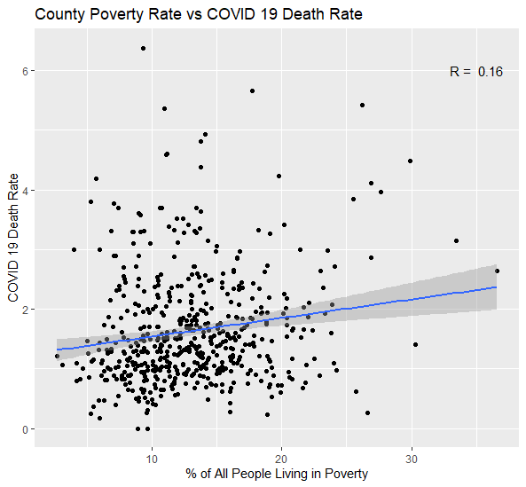

This graphic shows how particulate matter varies accross US counties. Note that only roughly 1 in 6 counties has sufficient data for an annual weighted mean measure.
This graphic shows how COVID death rate per case varies across US counties.
We see here that there is a very weak correlation with little explanatory power over the 500+ counties with PM2.5 data.
For context, here is how COVID death rate per case is correlated with county poverty rate (in the counties represented above):
Controlling for nothing else, county-level poverty rate is a far better indicator than PM2.5 (when controlling for nothing else).
However, since there is COVID death rate data and poverty data for more than 3000 counties, a more statistically precise correlation can be calcualated.
This graphic shows how county-level poverty rate varies accross US counties.
Repeating the same analysis above, a more explanatory relationship emerges with a much higher degree of precision.
With the data available from the EPA for 2019, there is no clear correlation between PM2.5 particles and COVID Death Rate without controlling for ommitted factors correlated with both PM2.5 particles and COVID Death Rate, such as amount of economic activity taking place in a county. A more complicated analysis could show such a correlation, but using PM2.5 concentrations without controlling for other factors to predict COVID Death Rate would have little benefit.